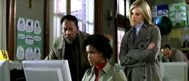

|
Along
Came a Spider/B,A- |
| Paramount/2001/103/ANA 2.35 |
This pretty solid suspensor breaks no new ground, nor are the characters especially compelling . Alex Cross, the cop
with an insight on psychos, is a good lead character and Morgan Freeman does make almost everything he
does compelling. Freeman is a comforting presence at the center of Along Came a Spider.
It’s pretty tough to make a movie much better than
the script. Director Lee Tamahori makes Along Came a Spider look terrific and the pacing is very
good. The script does telegraph whatever surprises may be in store for viewers, but it doesn’t
sink the film, just makes is list a little. It goes into areas that make me somewhat uncomfortable,
but I can deal with those aspects of the film.
 |
| Do you mind not looking over my
shoulder! ©Paramount |
Everybody plays off Freeman. Angry parents accuse him, but he's calm. An FBI agent is resentful,
but he wins him over. Another agent feels inadequate and Freeman soothes her. An actor like Freeman
makes everyone look better. Monica Potter looks great as FBI Agent Jezzie Flannagan
and Michael Wincott makes an excellent villain.
The omnipresent composer Jerry Goldsmith makes the
most of his notes in Along Came a Spider. His scores never seems to come up short in helping a film
to move effectively, to provide chills and suspense at the right moments, and, happily, they
maintain an individual integrity.
It’s an outstanding DVD transfer too. No edginess whatsoever
and the picture has ample pop in every scene. Image resolution is very fine resolving small details
impeccably. Black level and shadow balance are wonderful. Everything the director wants you to see
is clearly revealed. Color is dead on accurate and fully saturated. Great, solid reds and natural
Fleshtones are hallmarks of the transfer. I liked the
sound track balance. It’s not an overly aggressive Dolby Digital 5:1 mix and the music is perfect
balance with the action. An extra fifteen minute featurette travels the pretty standard route.
|
|
|
|

The
Movie Poster Archive includes extensive poster images from the films of stars like Susan Hayward,
Kirk Douglas, Katharine Hepburn and many more. Our featured star is James Mason

Selections from the Feature Archive include articles on
Akira Kurosawa, Blonde Bimbos,
Frank
Darabont, Steven Culp,
John
Herzfeld or Vietnam: The
Hollywood Pariah, and many more....
Director Walks the Wire
Balanced by an armor of movie lore and filmmaking daring, director John Herzfeld is comfortable
walking the high wire. Check out this interview by Stu Kobak.


A film of extraordinary power that pulls no punches, The Grifters is not to be missed.
Hungry characters on the con, the short con, the long con, the self con.

DVD packaging can be the bane of the collector. Click on Rants and
Raves for more.
The DVD Package
|